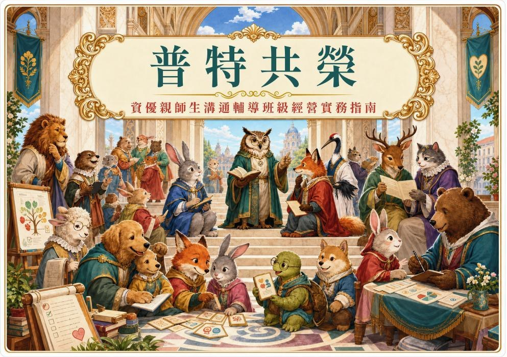

普特融合 · 教育實務章節閱讀版
READING GUIDE / 內容總覽
看見天賦，也看見需求。
《普特共榮》將資優親師生溝通與班級經營的現場難題，轉化成可以理解、可以採取行動的策略牌卡。

4 大主題50 張策略牌卡113 頁原始文件
依章節開始閱讀
01策略 01–13 · 13 張牌卡
02師生溝通與互動技巧
讓對話重新流動
策略 14–25 · 12 張牌卡
03情緒管理與輔導支持
先承接情緒，再支持學習
策略 26–38 · 13 張牌卡
04班級經營與行為規範
在共同底線中容納差異
策略 39–48 · 10 張牌卡
05親師合作與資源整合
把支持連成一張網
策略 49–50 · 2 張牌卡
緊急策略
先停止升溫，讓支援進場
內容分析
從處理行為，走向理解需求
本書以普通班的實務現場為出發點，將師生互動、情緒支持、班級常規與親師資源串在一起。資優能力不代表所有發展都同步，也不代表不需要輔導；教師的彈性理解與適時引導，是學生融入班級的重要支持。
01
辨識情境
對照眼前發生的衝突、挫折或互動困難。
02
採取行動
先使用具體、可操作的處理方式與對話。
03
理解核心心理
從行為背後看見需求，逐步建立長期信任。